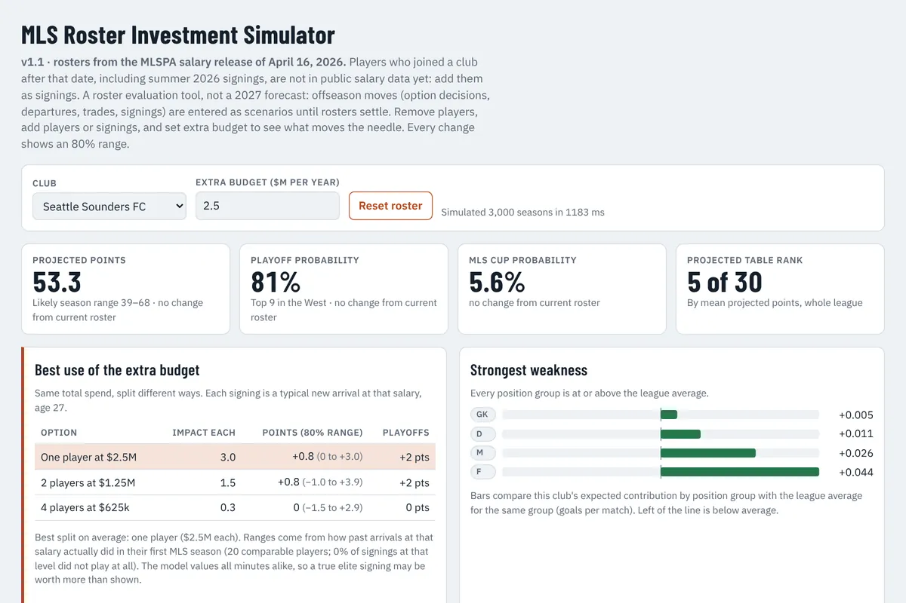

Scouting
MLS player profiles
Every MLS outfielder with 900+ minutes, grouped into data-driven roles, with comparable players and value against salary. Includes a USL → MLS pathway model.
Sports analytics · MLS
Can a club buy its way to success in a league defined by parity? I study that question with public data, then turn the answers into a tool a front office can use.
Pick a club, add or remove players, set a budget: projected points, playoff and MLS Cup odds, each with an 80% range.

Why does MLS stay so competitive? Chance decides 56% of the spread in an MLS table, against 23% across European top flights.
MLS clubs are closer together in quality than clubs in five comparable leagues at every roster tier, most of all at the top. Talent clusters less, and advantages fade faster from one season to the next.
Two research papers, checks against betting markets and placebo tests, and every failed check reported. See how it was built.
The Roster Investment Simulator turns the findings into roster scenarios for any club.
Scouting
Every MLS outfielder with 900+ minutes, grouped into data-driven roles, with comparable players and value against salary. Includes a USL → MLS pathway model.
Research
Is MLS Built to Be Random? and Why MLS Teams Stay So Close Together, with the predictions, results log and validation reports.
I work at the intersection of applied AI and football analysis: statistical models, machine learning and the software that makes them usable. I build, debug, rewrite and learn as each question demands, using AI tools where they help.
For Paper 2, the predictions were written before the analysis data was downloaded and recorded in the project log. Results that went against my starting hypothesis are reported as they came out. The code, data sources and validation reports are public on GitHub.
Computer science graduate. I played football until college and still follow it closely.